Creative
A collection of various creative over the years in no particular order (WIP).
Audio Generated Posters
Square Root took pride in its unique culture and people. To celebrate this, I designed personalized value posters for award winners using their own recorded audio data. By incorporating unique variables—like years of service—each poster became a one-of-a-kind tribute to that specific team member.
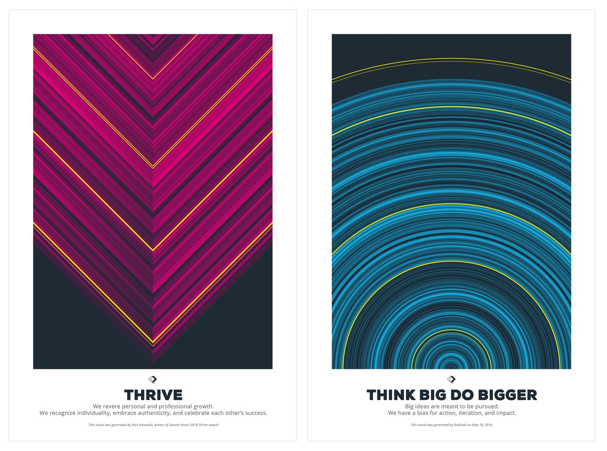
ROIKOI launch
To stand out at the legendary SXSW Startup Crawl, you have to think outside the box. To grab attention for ROIKOI, "Roy" was born, a Deadmau5-style LED mascot head that was visible for blocks.
Our mascot, "Roy," became an instant hit, blowing up on social media and earning coverage across SXSW media sites. Beyond the interviews and invitations to join musicians on stage, the project was a major success for the business—driving a significant spike in software enrollments.
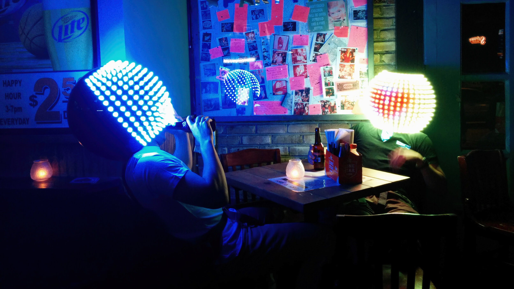
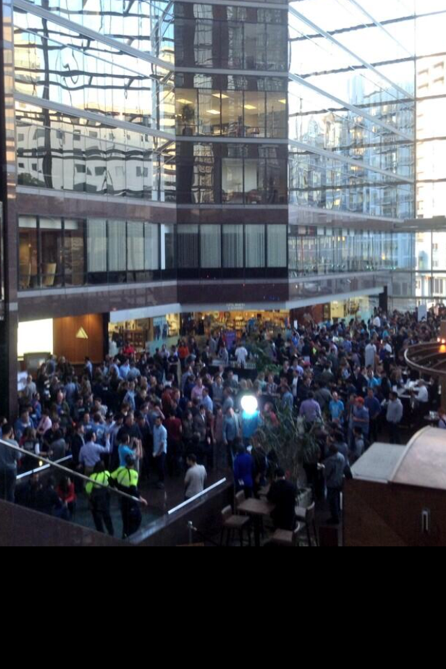
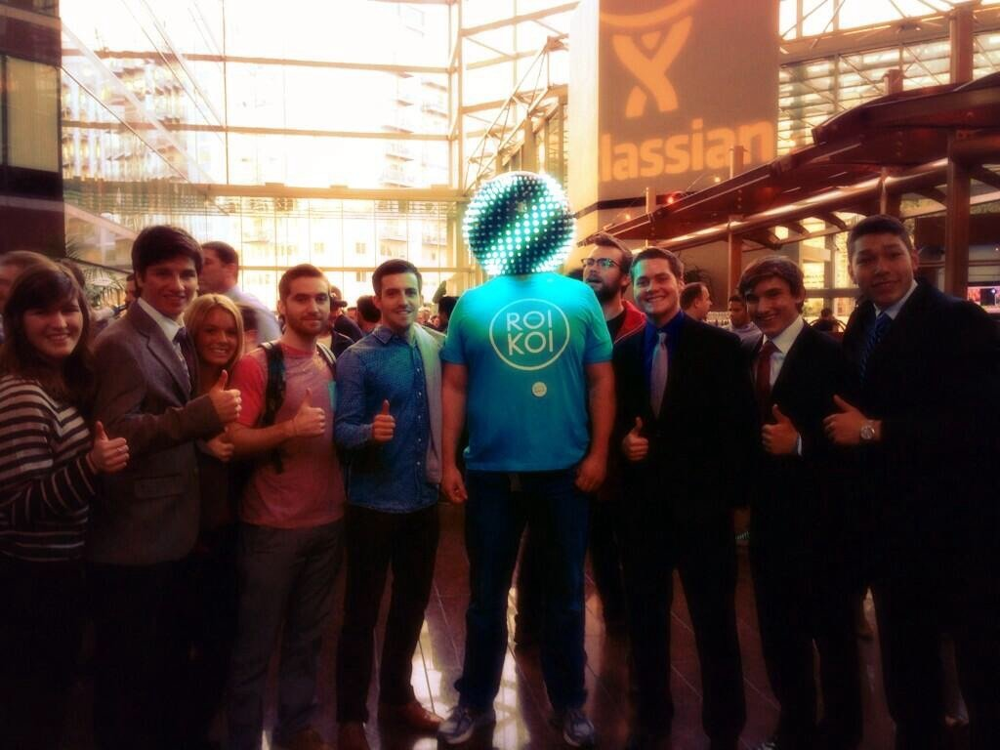

Game Development
An interactive story that forever seems to be in development as I work on items in my spare time.
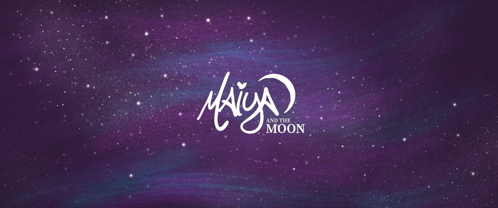
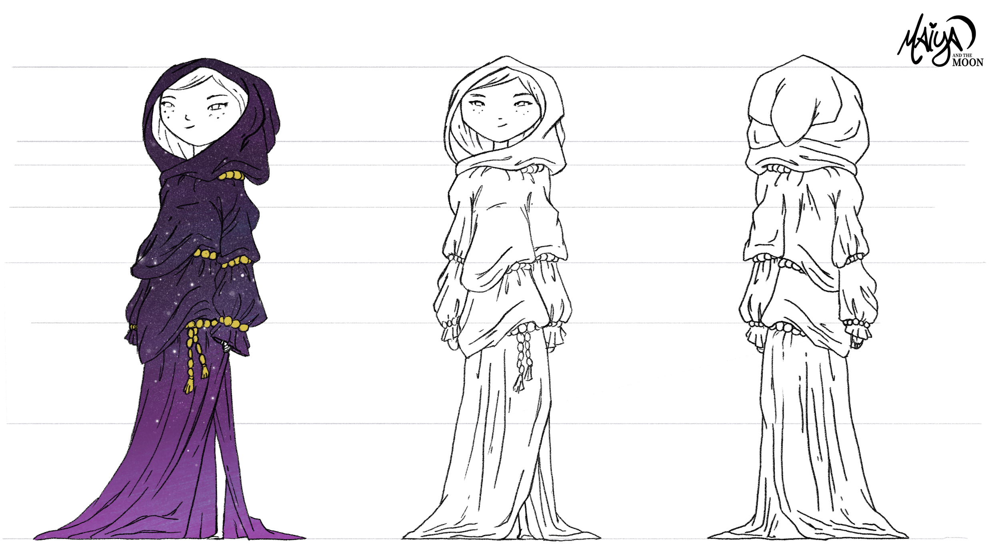
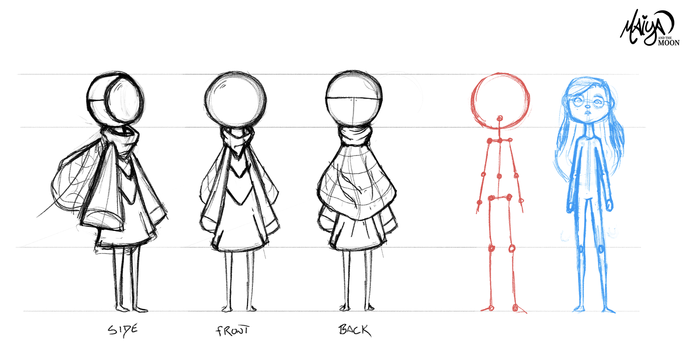
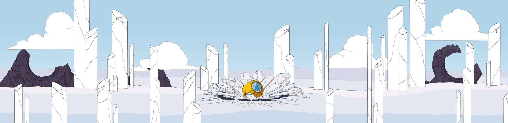
Logos
Beyond product design, I have a long-standing history of building brands from the ground up, designing logos and visual identities that resonate.
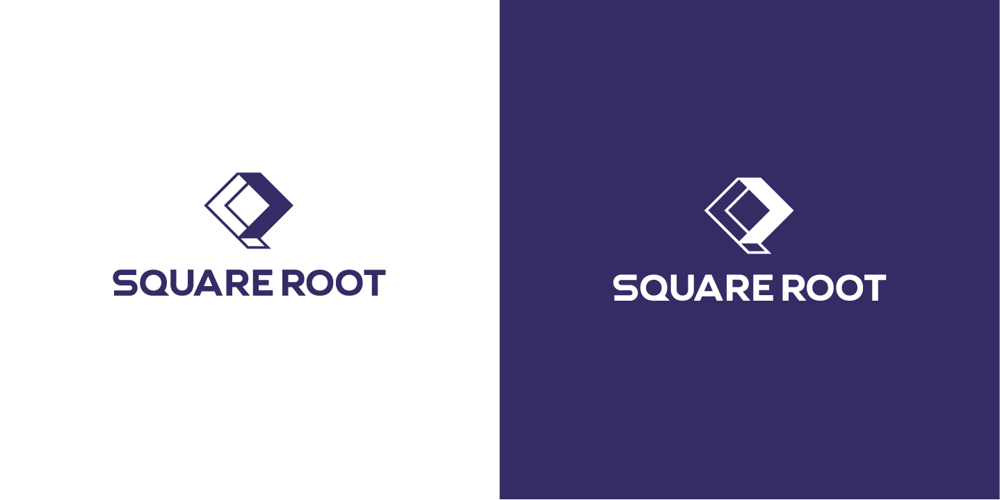
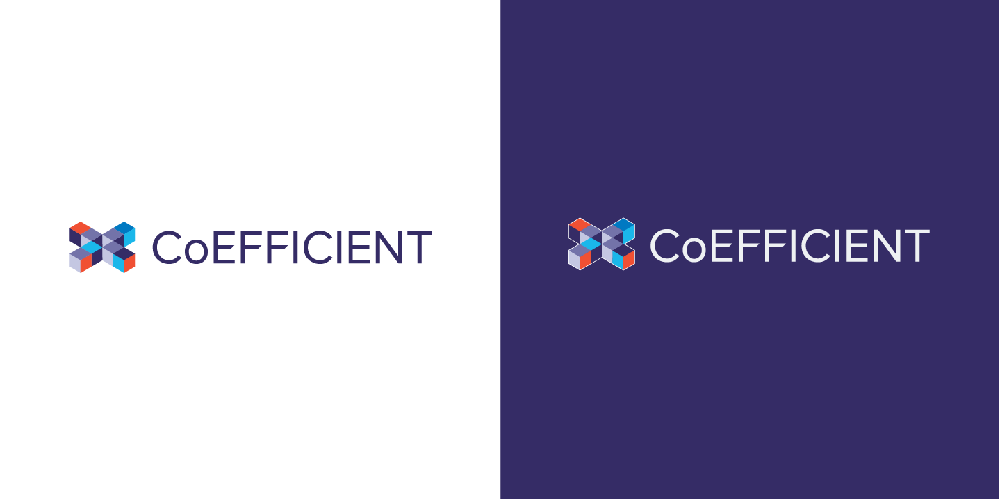
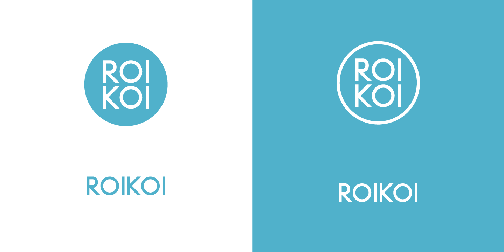